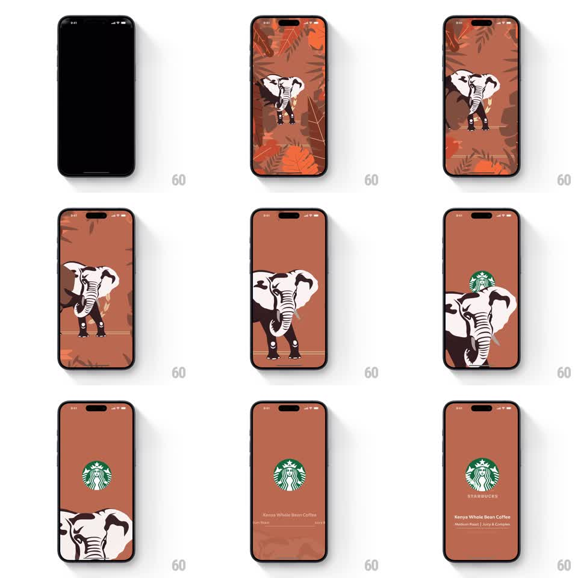

Media
Frame-by-frame

Rebuild this animation 1:1: Starbucks' Kenya splash - an elephant in rust-toned foliage walks the screen, the foliage parts, the elephant exits, and the siren logo with Kenya Whole Bean details staggers in.

Rebuild this animation 1:1: Starbucks' Kenya splash - an elephant in rust-toned foliage walks the screen, the foliage parts, the elephant exits, and the siren logo with Kenya Whole Bean details staggers in. ## Integration Integration: stack-agnostic spec - springs given as stiffness/damping, timed motions as duration + curve; map every value to your framework and animation library of choice. ## Scene Terracotta-rust field with an illustrated elephant among orange-red leaves and fronds. End state: flat rust screen, green siren at center, STARBUCKS wordmark, "Kenya Whole Bean Coffee", "Medium Roast | Juicy & Complex", "ORDER NOW IN STORES". ## Motion spec Pattern: foliage parting, character exit, staggered brand lockup. - The scene fades in from black (400ms): leaves slide in from edges (spring ~260/22, 80ms stagger) and the elephant walks to center (translate, 800ms, gentle bob 3pt at 2Hz). - The foliage then parts outward (500ms, ease-in-out) while the elephant ambles down and off the bottom edge (700ms, same bob). - The siren pops in (scale 0.5 -> 1.1 -> 1, spring ~300/15) as the last leaves clear. - Wordmark, product name, tasting line, and order link stagger in (fade + rise 8pt, 250ms each, 120ms apart). ## Calibration - The elephant is flat illustration (cream with dark shading) - it reads as storybook, not photo. - Its exit keeps the walking bob; no sliding statue. ## Reduced motion Scene crossfades to logo stage (400ms); texts fade together. ## Don't miss - The rust background is constant edge to edge in every state. - The logo's pop overlaps the elephant's exit slightly - choreographed, not sequential-dead.